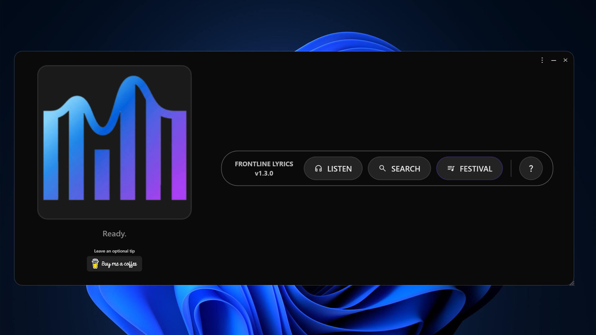
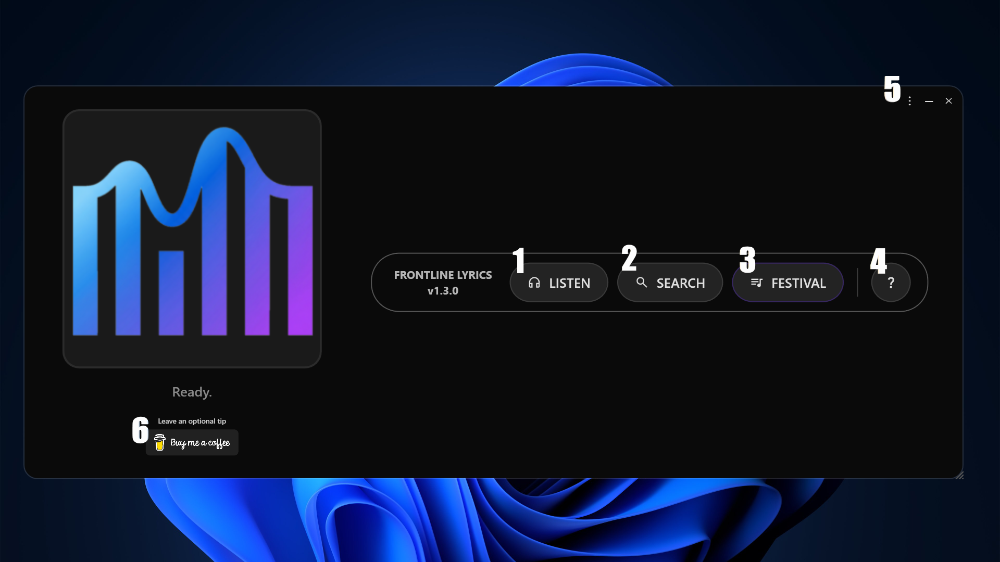
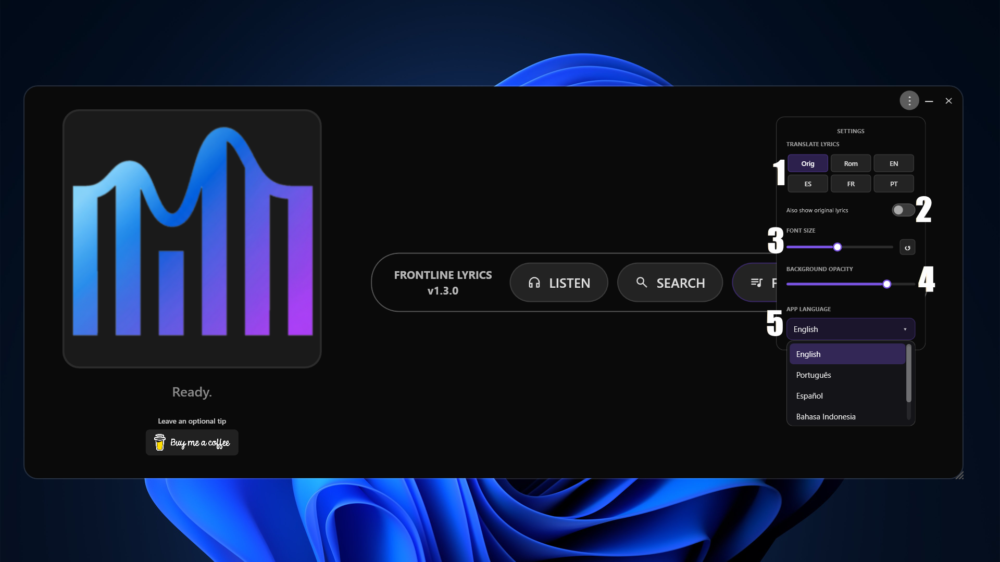
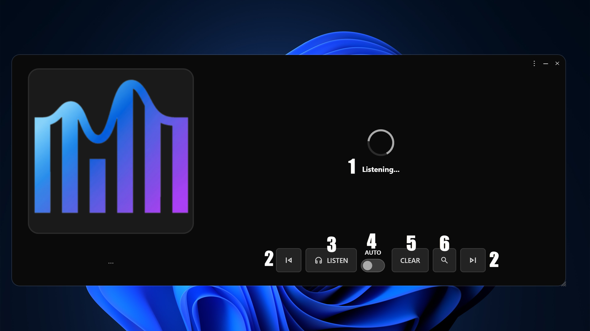
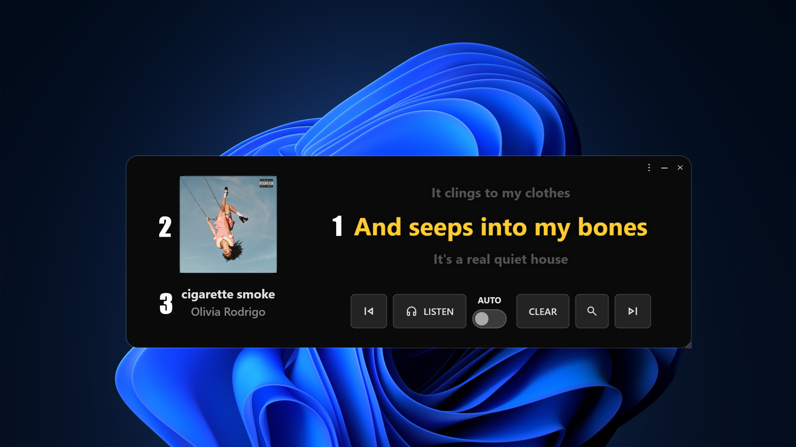
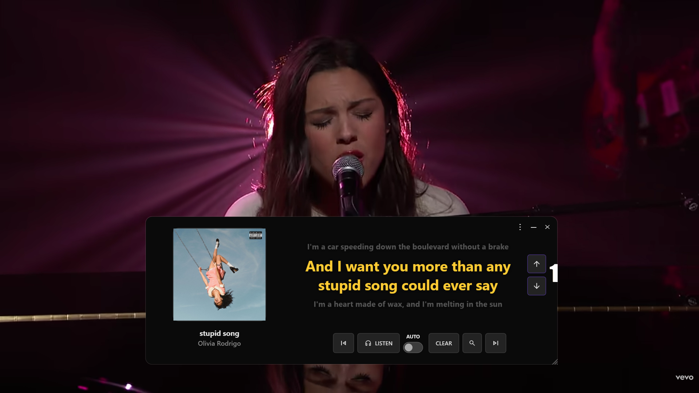
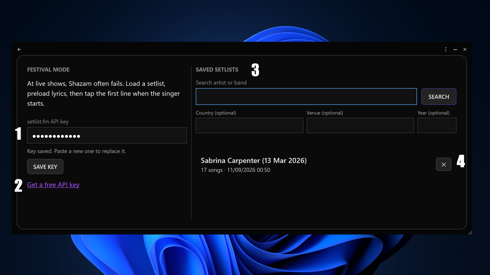
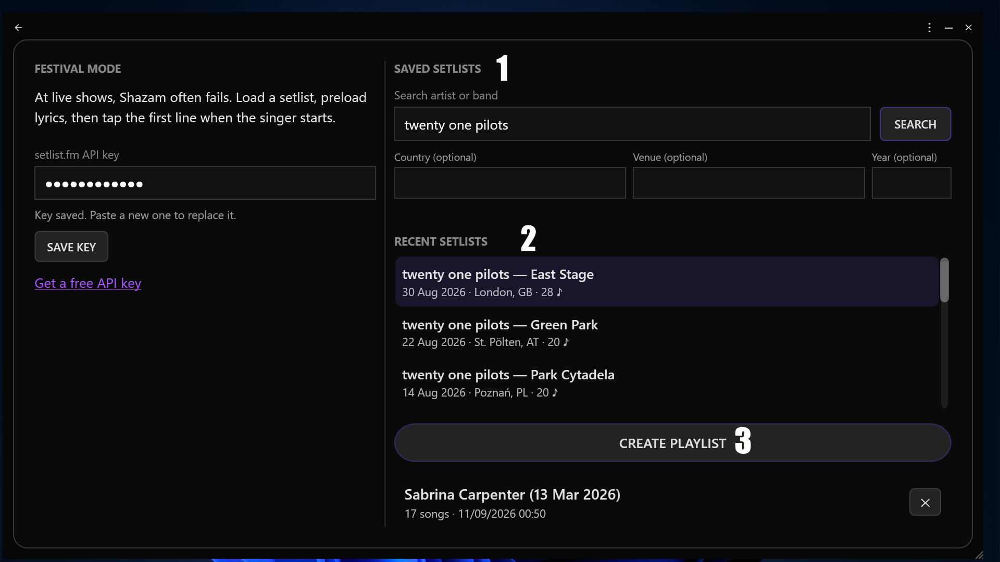
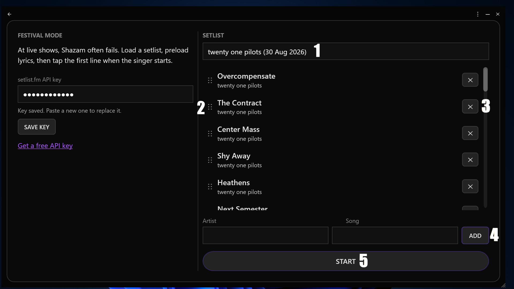
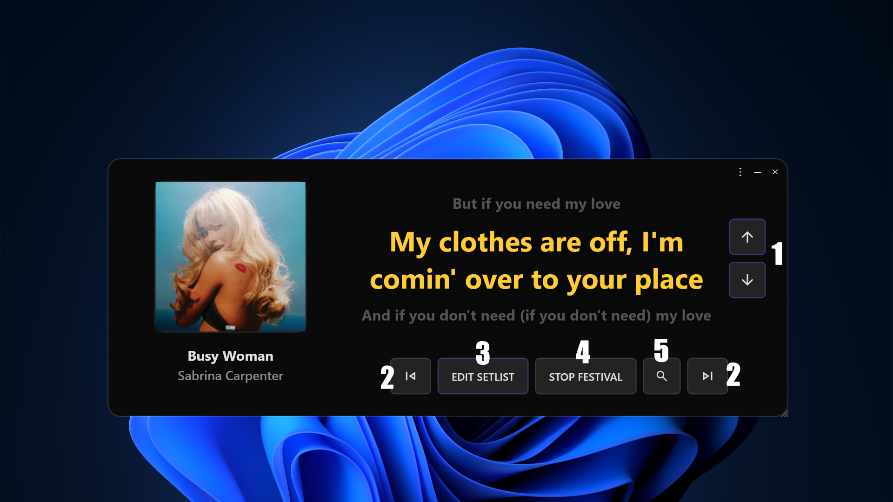

How to use FrontLine Lyrics
The same walkthrough that shows up inside the app the first time you open it — just with more room to breathe.
Welcome to FrontLine Lyrics
This app identifies whatever song is playing on your computer and shows the synced lyrics on screen. Works with Spotify, YouTube, or any other player. Just let the music play.


Getting to know the home screen
The numbers below match the markers on the screenshot.
- Identifies the song and shows the synced lyrics.
- Manual search. Type the artist and song to find the lyrics.
- Festival Mode: built for live shows — put together the show's playlist and follow the lyrics manually until the app takes over the sync on its own.
- Reopens this tutorial.
- The three-dot menu, the minimize button, and the button that closes the app.
- Button to support the project with a coffee.
The settings menu
The numbers below match the markers on the screenshot.
- Translates the lyrics into another language, or converts them to a romanized version.
- Shows the original lyrics in smaller text right below the translation.
- Adjusts the lyrics' font size with the slider.
- Controls the background opacity behind the lyrics, from fully transparent to fully opaque.
- Dropdown to change the app's language.


When you click LISTEN
The screen switches to show:
- The waiting area, showing "Listening..." while the app captures the audio.
- Next and previous track buttons.
- The LISTEN button, to identify the song.
- The AUTO mode switch.
- The button that clears the screen and returns to the start.
- The manual search button.
Song identified!
The lyrics appear on screen, along with:
- The synced lyrics, always showing three lines: the previous one, the current one, and the next one.
- The album cover.
- The song name and, right below it, the artist or band name.


Lyrics out of sync?
When the song isn't coming from Spotify — meaning it was identified by Shazam or you're in Festival Mode — up and down arrows appear on screen. Use them to change which line is current, moving forward or back until you land on the line the singer is on. It's the way to manually fix any drift, especially during live shows.
Setting up Festival Mode
- Field to enter your setlist.fm API key.
- Link to get your own setlist.fm API key.
- Search fields: artist or band is required; country, venue, and year are optional and help narrow the search.

Getting your setlist.fm API key
You only need to do this once. Here's the full path, from the link inside the app to the key you'll paste back in:
- Inside the app, click the link next to the API key field — it opens the setlist.fm sign-up page in your browser.
- Create a free account and confirm it through the link setlist.fm sends to your email.
- Back in the app, click that same link again. This time, since you're logged in, it takes you straight to the API key request page.
- Fill in "Application Name" — anything that identifies your use is fine.
- Fill in "Application Description" with 30 to 4,000 characters explaining what you'll use the API for.
- Click Submit.
- Your API key shows up on the next screen. Copy it and paste it into FrontLine Lyrics.
FrontLine Lyrics – Personal Use
Personal, non-commercial use of the setlist.fm API inside the FrontLine Lyrics desktop app, to search setlists and build show playlists for Festival Mode, which displays synced lyrics during live performances.
Feel free to write your own version — setlist.fm just wants to know who's using the API and why.

Searching for a setlist
- Example search for Twenty One Pilots, without using any optional filter.
- The 10 most recent results are shown.
- Button to build a playlist from the selected setlist.
Your Festival Mode playlist
- Playlist name, which you can freely edit.
- Icon to the left of each song: click and drag to reorder it.
- X button on each song, to remove it from the playlist.
- Artist and song fields to search for a track and add it wherever you want.
- START button, to begin the playlist.


Festival Mode in progress
- Manual sync buttons, to skip forward or back a line of lyrics.
- Buttons to move to the next song or back to the previous one in the playlist.
- Button that opens the edit screen, to reorder, add, or remove songs.
- Button to end Festival Mode.
- Button to search for songs to add to the playlist.